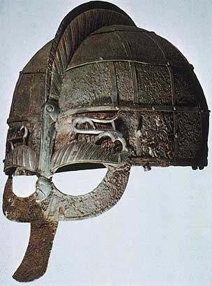

Jesse L. Byock Professor of Old Norse and Medieval Scandinavian Studies, Scandinavian Section Professor, Cotsen Institute of Archaeology University of California Los Angeles

BOOK LIST - CLICK HERE FOR PDF
Books:
Articles:
For additional articles about Archaeology click here.
UCLA Scandinavian Section BOX 951539, 212 Royce Hall Los Angeles, CA 90095-1539
www.viking.ucla.edu © 2011